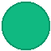

Hazır paket bulunamadı
APK sürükleyin veya sol panelden build izleyicisini ayarlayın.
Henüz dosya aktarılmadı
APK, resim, video, ses veya belge sürükleyip bırakın.
Henüz görüntü alınmadı
Görüntü yakalamak için Capture butonuna tıklayın.